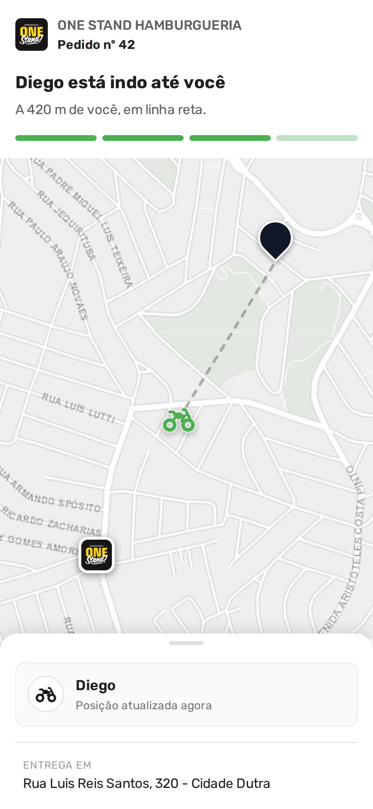

<!-- A capa ANUNCIA: o nome do recurso no titulo, o que ele faz no subtitulo.

     SEGUNDA VERSAO. A primeira era "A mesma mensagem, agora com rastreio da
     entrega", no molde antes x agora, e voltou do dono com duas correcoes.

     1. O SUJEITO ERA O MEIO. "A mesma mensagem" poe o WhatsApp no lugar de
        heroi, e o WhatsApp e por onde o recurso chega — nao e o recurso. Quem
        le so a primeira metade da frase (que e como se le no feed) recebe a
        noticia de que NADA mudou, e a correcao vem depois da virgula.
     2. O NOME ESTAVA ERRADO. "Rastreio da entrega pelo cliente" e o titulo do
        release, escrito do lado de quem construiu. O nome pelo qual o recurso
        se vende e ACOMPANHAMENTO EM TEMPO REAL, e e esse que a capa diz.

     Molde: NOME + PARA QUEM, primeiro uso na serie. Placar das dez capas
     anteriores: afirmacao do fato 5, pergunta 2, anuncio de chegada 1, nome +
     canal 1, nome + dois-pontos 1.

     O destaque cai em "em tempo real", e nao no nome inteiro como na #8, na #9
     e na #10. Ali a palavra vermelha era a que o leitor ia PROCURAR NO MENU
     depois; aqui nao ha menu nenhum para procurar — o recurso e automatico e
     nao tem tela de configuracao. Entao o vermelho vai no que e noticia.

     Titulo em tres linhas curtas porque o nome tem 28 caracteres: em 68 px
     cabem ~22 por linha, e quebrar em Acompanhamento / em tempo real / pelo
     seu cliente deixa cada linha inteira e o cartaz de pe.

     A imagem e CAPTURA da pagina de producao do cardapio digital, e nao um
     desenho: a resposta do rastreio foi trocada dentro do navegador e o Nuxt
     desenhou o Leaflet, o pino, a moto e a barra. O celular sangra pela base,
     e o corte cai logo abaixo da moto — o pino da loja fica para o slide 5,
     que e o dono daquele assunto. -->
<div class="slide slide--capa">
  <div class="topo">
    <span class="logo"></span>
    <span class="contador">1 de 7</span>
  </div>

  <div class="pilha g24" style="margin-top: 34px; max-width: 900px">
    <span class="pilula pilula--novidade">Novidade</span>
    <h1 class="titulo titulo--medio">
      Acompanhamento<br><span class="destaque">em tempo real</span>,<br>pelo
      seu cliente
    </h1>
    <p class="subtitulo">
      O mapa da entrega chega pelo WhatsApp.
    </p>
  </div>

  <div class="luz" style="left: 50%; top: 520px; width: 1200px; height: 880px;
                          margin-left: -600px; filter: blur(72px);
                          background: radial-gradient(ellipse 44% 50% at 50% 47%,
                                      rgba(255, 246, 236, 0.82) 0%,
                                      rgba(255, 214, 184, 0.32) 62%,
                                      rgba(0, 0, 0, 0) 82%)"></div>

  <div class="sangria" style="top: 585px; left: 50%; transform: translateX(-50%);
                              width: 620px">
    <div class="celular" style="width: 620px">
      <div class="celular__tela">
        
      </div>
    </div>
  </div>
</div>
